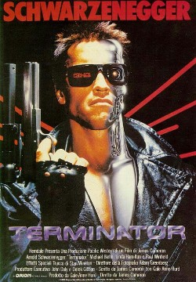

Ano: 2004
País: EUA
Ficha Técnica:
Título Original: Alien vs. Predator
Gênero: Ficção Científica
Tempo de Duração: 87 minutos
Ano de Lançamento (EUA): 2004
Site Oficial: http://foxfilm.terra.com.br/avp
Estúdio: Davis Entertainment / Kut Films / Babelsberg Film
GmbH / Lonlink Productions / Impact Pictures / Stillking Films
Distribuição: 20th Century Fox Film Corporation
Direção: Paul W.S. Anderson
Roteiro: Paul W.S. Anderson, baseado em estória de Paul W.S.
Anderson, Dan O'Bannon e Ronald Shusett e nos personagens criados
por Dan O'Bannon, Ronald Shusett, Jim Thomas e John Thomas
Produção: Gordon Carroll, John Davis, David Giler e
Walter Hill
Música: Harald Kloser
Fotografia: David Johnson
Desenho de Produção: Richard Bridgland
Direção de Arte: Milena Koubkova, Adam O'Neil e Justin
Warburton-Brown
Figurino: Magali Guidasci
Edição: Alexander Berner
Efeitos Especiais: Cinesite / Double Negative / The Moving Picture
Company / Framestore
Elenco:
Sanaa Lathan (Alexa Woods)
Raoul Bova (Sebastian de Rosa)
Lance Henriksen (Charles Bishop Weyland)
Ewen Bremner (Graeme Miller)
Colin Salmon (Maxwell Stafford)
Tommy Flanagan (Mark Verheiden)
Joseph Rye (Joe Connors)
Agathe De La Boulaye (Adele Rousseau)
Carsten Norgaard (Rusten Quinn)
Sam Troughton (Thomas Parks)
Petr Jákl (Stone)
Pavel Bezdek (Bass)
Kieran Bew (Klaus)
Carsten Voigt (Mikkel)
Jan Pavel Filipensky (Boris)
Adrian Bouchet (Sven)
Andy Lucas (Juan Ramirez)
|
Sinopse:
Uma pirâmide até então desconhecida é encontrada
na Antártica através de satélites, fazendo com
que uma equipe de cientistas e aventureiros seja enviada para investigar
o local. Porém lá eles fazem uma descoberta atra: a
pirâmide serve de abrigo para duas raças alienígenas
extremamente violentas, que estão em guerra. .
|
|

Ano: 2008
País: EUA
Ficha Técnica:
Título Original: The X-Files: I Want to Believe
Gênero: Ficção Científica
Tempo de Duração: 104 minutos
Ano de Lançamento (EUA / Canadá): 2008
Site Oficial: www.arquivox2.com.br
Estúdio: 20h Century Fox Film Corporation / Ten Thirteen Productions
/ Crying Box Productions
Distribuição: 20th Century Fox Film Corporation
Direção: Chris Carter
Roteiro: Frank Spotnitz e Chris Carter, baseado em personagens criados
por Chris Carter
Produção: Chris Carter e Frank Spotnitz
Fotografia: Bill Roe
Desenho de Produção: Mark S. Freeborn
Direção de Arte: Tony Wohlgemuth
Figurino: Lisa Tomczeszyn
Edição: Richard A. Harris
Efeitos Especiais: Entity FX / Frantic Films
Elenco:
David Duchovny (Fox Mulder)
Gillian Anderson (Dana Scully)
Amanda Peet (Agente Dakota Whitney)
Billy Connolly (Padre Joseph "Joe" Crissman)
Xzibit (Agente Mosley Drummy)
Adam Godley (Padre Ybarra)
Marco Niccoli (Christian Fearon)
Carrie Ruscheinsky (Margaret Fearon)
Spencer Maybee (Blair Fearon)
Xantha Radley (Monica Bannan)
Callum Keith Rennie
|
Sinopse:
O súbito desaparecimento da agente Monica Bannan (Xantha Radley)
faz com que a agente Dakota Whitney (Amanda Peet) recorra à
ajuda do padre Joe (Billy Connolly), um homem que abusou sexualmente
de 37 coroinhas no passado e que alega ter visões. Para ajudá-la
na busca, já que não conta com experiência em
acontecimentos fora do comum, a agente Whitney busca o apoio de Fox
Mulder (David Duchovny), que não é mais agente do FBI.
O contato é feito através de Dana Scully (Gillian Anderson),
que também deixou a organização e agora trabalha
como médica em um hospital católico. Inicialmente relutante,
Mulder decide cooperar e, aos poucos, passa a acreditar cada vez mais
nas palavras do padre Joe.
|
|

Ano: 1984
País: EUA
Ficha Técnica:
Título Original: The Terminator
Gênero: Ficção Científica
Duração: 107 min
Estúdio: Orion Pictures
Direção: James Cameron
Roteiro: James Cameron, Gale Anne Hurd
Produção: Gale Anne Hurd
Elenco:
Arnold Schwarzenegger - Exterminador
Michael Biehn - Kyle Reese
Linda Hamilton - Sarah Connor
Paul Winfield - Ed Traxler
Lance Henriksen - Detetive Vukovich
Bess Motta - Ginger Ventura
Earl Boen - Dr. Peter Silberman
Rick Rossovich - Matt Buchanan
Dick Miller - Pawnshop Clerk
Shawn Schepps - Nancy
|
Sinopse:
Andróide (Arnold Schwarzenegger) vem do futuro com o objetivo
de matar a mãe (Linda Hamilton) de um futuro líder guerrilheiro
humano e assim evitar o seu nascimento. Mas um guerrilheiro do futuro
(Michael Biehl) vem também com o objetivo de proteger a mãe
e garantir o nascimento da criança.As falas de Schwarzenegger
em O Exterminador do Futuro se resumiram a apenas 17 sentenças.
Seguido por O Exterminador do Futuro 2 (1991) e O Exterminador do Futuro
3 - A Rebelião das Máquinas (2003). Após as filmagens
de "O Exterminador do Futuro",Schwarzenegger afirmou que nunca
mais iria interpretar um vilão em sua vida, até que em
1997, ele aceitou interpretar o vilão Mr. Freeze em "Batman
& Robin".
|
|
|
Ano: 1999
País: EUA
Ficha Técnica:
Título Original: The Matrix
Gênero: Ficção Científica
Tempo de Duração: 136 minutos
Site Oficial: www.whatisthematrix.com
Estúdio: Village Roadshow Productions
Distribuição: Warner Bros.
Direção: Andy Wachowski e Larry Wachowski
Roteiro: Andy Wachowski e Larry Wachowski
Produção: Joel Silver
Música: Don Davis
Direção de Fotografia: Bill Pope
Desenho de Produção: Owen Paterson
Direção de Arte: Hugh Bateup e Michelle McGahey
Figurino: Kym Barrett
Edição: Zach Staenberg
Efeitos Especiais: Mass. Illusions, LLC / Manex Visual Effects / Amalgameted
Pixels
Elenco:
Keanu Reeves (Thomas A. Anderson/Neo)
Laurence Fishburne (Morpheus)
Carrie-Anne Moss (Trinity)
Hugo Weaving (Agente Smith)
Gloria Foster (Oráculo)
Joe Pantoliano (Cypher)
Marcus Chong (Tank)
Julian Arahanga (Apoc)
Matt Doran (Mouse)
Belinda McClory (Switch)
Ray Anthony Parker (Dozer) |
Sinopse:
Em um futuro próximo, Thomas Anderson (Keanu Reeves), um jovem
programador de computador que mora em um cubículo escuro, é
atormentado por estranhos pesadelos nos quais encontra-se conectado
por cabos e contra sua vontade, em um imenso sistema de computadores
do futuro. Em todas essas ocasiões, acorda gritando no exato
momento em que os eletrodos estão para penetrar em seu cérebro.
À medida que o sonho se repete, Anderson começa a ter
dúvidas sobre a realidade. Por meio do encontro com os misteriosos
Morpheus (Laurence Fishburne) e Trinity (Carrie-Anne Moss), Thomas descobre
que é, assim como outras pessoas, vítima do Matrix, um
sistema inteligente e artificial que manipula a mente das pessoas, criando
a ilusão de um mundo real enquanto usa os cérebros e corpos
dos indivíduos para produzir energia. Morpheus, entretanto, está
convencido de que Thomas é Neo, o aguardado messias capaz de
enfrentar o Matrix e conduzir as pessoas de volta à realidade
e à liberdade.
|
|
|
País: EUA
Ficha Técnica:
Ficha Técnica:
Título Original: Star Wars - Episode IV - A New Hope
Gênero: Aventura, Ficção Cientifica
Duração: 121 min
Estúdio: Lucasfilm Ltd.
Direção: George Lucas
Roteiro: George Lucas
Produção: Gary Kurtz
Elenco:
Mark Hamill - Luke Skywalker
Harrison Ford - Han Solo
Carrie Fisher - Princesa Leia Organa
Peter Cushing - Grand Moff Wilhuff Tarkin
Alec Guinness - Obi-Wan Kenobi
Anthony Daniels - C3PO
Kenny Baker - R2D2
Peter Mayhew - Chewbacca
David Prowse - Darth Vader
Phil Brown - Tio Owen Lars
|
Sinopse:
Luke Skywalker (Mark Hammil) sonha ir para a Academia como seus amigos,
mas se vê envolvido em uma guerra intergalática quando
seu tio compra dois robôs e com eles encontra uma mensagem da
princesa Leia Organa (Carrie Fisher) para o jedi Obi-Wan Kenobi (Alec
Guiness) sobre os planos da construção da Estrela da Morte,
uma gigantesca estação espacial com capacidade para destruir
um planeta. Luke então se junta aos cavaleiros jedi e a Hans
Solo (Harrison Ford), um mercenário, e junto com membros da resistência
tentam destruir esta terrível ameaça.
|
|
|